0. Setup do Estúdio
🏠 Monte seu espaço de gravação
Antes de ligar a câmera, o ambiente precisa estar pronto. Um bom setup economiza horas de edição e eleva a qualidade do canal inteiro.
- Mesa limpa e estável: use uma mesa sem reflexos indesejados ou use um tapete preto/tecido fosco como fundo.
- Espaço mínimo: 60 cm entre a figura e o fundo para conseguir separação de luz e evitar sombras duras.
- Controle a luz ambiente: feche cortinas, apague luzes de teto e trabalhe em ambiente escuro. Quanto mais escuro, mais controle você tem.
📱 Posicionamento do Redmi Note 13 Pro
Coloque o celular em um tripé ou apoio estável na altura do peito da figura. Evite segurar na mão — a OIS ajuda, mas estabilidade física é insubstituível.
- Altura da lente: na altura dos olhos da figura para ângulo natural e imersivo.
- Distância inicial: 20–40 cm da figura, dependendo do tamanho e do enquadramento desejado.
- Modo avião ativado: evita notificações, vibrações e quedas de performance durante a gravação.
🔄 Exemplo: Antes e Depois do Setup
Esquerda: ambiente com luz de teto, celular na mão e fundo bagunçado. Direita: ambiente controlado, tripé e fundo limpo.
🎨 Prompt para IA Side by side comparison of a toy photography studio setup, left messy room with ceiling light and phone in hand, right clean dark studio with tripod, black backdrop and two LED lights, infographic style --ar 16:9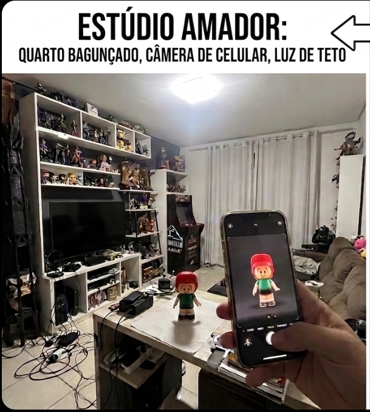
🔍 Clique para ampliar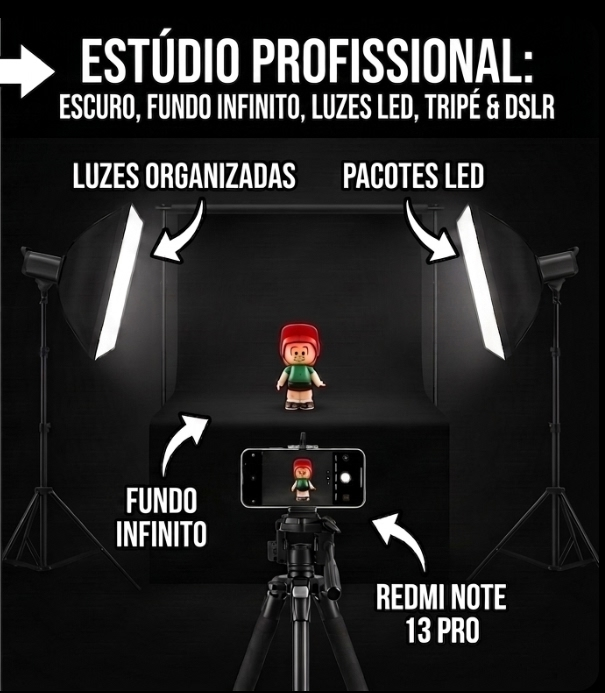
🔍 Clique para ampliar💡 Luz básica para começar
Você não precisa de equipamento caro. Comece com o que tem e evolua. Aqui estão três opções de setup:
- Setup 1 — Luz natural + rebatedor: use uma janela como luz principal e um papel branco para suavizar sombras. Ótimo para fotos, ruim para vídeos noturnos.
- Setup 2 — Duas lâmpadas LED: uma à frente/suave e outra atrás como rim light. Controle total de horário.
- Setup 3 — Ring light + gelatina colorida: luz frontal uniforme com toques de cor no fundo. Ideal para estética anime/cyber.
🌑 Exemplo: Iluminação Antes/Depois
Mesma figura, mesmo ângulo. A diferença está na direção e temperatura da luz.
🎨 Prompt para IA Before and after lighting comparison of action figure photography, left flat overhead room light, right dramatic two-point LED lighting with rim light, cinematic quality --ar 16:9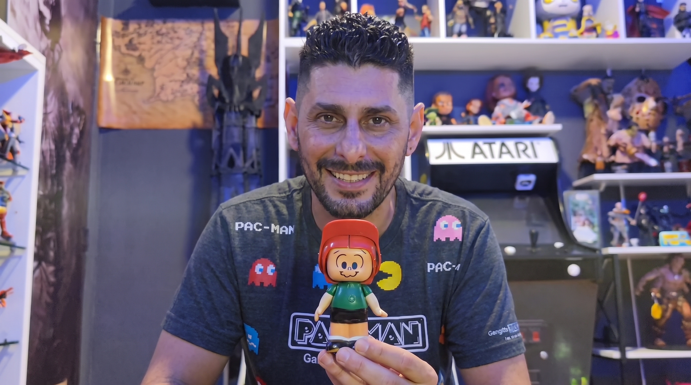
🔍 Clique para ampliar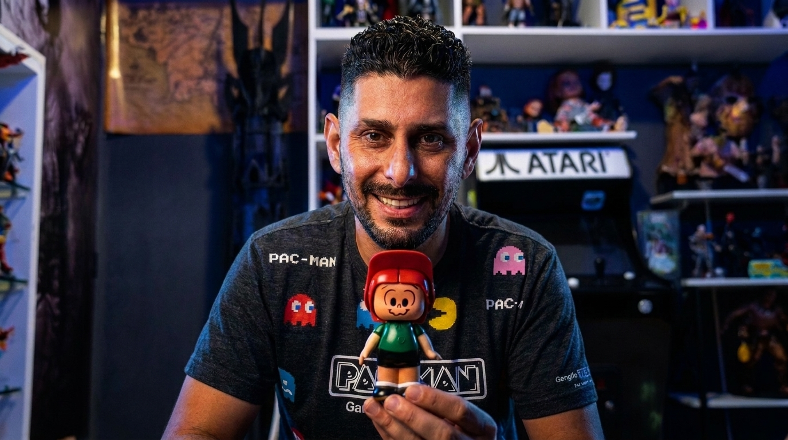
🔍 Clique para ampliarChecklist rápido antes de gravar: ambiente escuro, celular no tripé, modo avião, lentes limpas, bateria acima de 50%, e memória livre suficiente para gravar em 4K.
1. Configurações Decisivas
🔑 Regras de Ouro antes de ligar as luzes
- Esqueça o Modo 200MP para vídeos: ele é só para fotos. Use o Modo Vídeo Padrão.
- Resolução: 4K a 30 FPS (cena estática/nitidez máxima) ou 1080p a 60 FPS (slow motion na edição).
- Lente: sempre a Principal 1X. Evite a Ultra-wide e jamais use a Macro de 2 MP.
Ela tem baixíssima qualidade. No lugar dela, use a câmera principal (1X) com zoom digital de 2X. O sensor de 200 MP mantém nitidez excelente no crop e ainda entrega bokeh natural.
Focus Peaking: aquelas linhas vermelhas/azuis que aparecem na tela no modo Pro. Use-as para garantir que o rosto do action figure está 100% no foco antes de gravar.
2. Ângulos & Movimentos de Câmera
🐛 A) Ângulo do Verme (Low-Angle Shot)
Vire o Redmi de cabeça para baixo e encoste a lente no chão. Isso gera uma perspectiva gigantesca — como se a câmera fosse do tamanho do personagem. Incline ~30° para cima.
🧊 Exemplo: Perspectiva de Gigante
O action figure parecerá uma criatura colossal de 20 metros no topo de um prédio.
🎨 Prompt para IA Low-angle cinematic shot of a realistic action figure standing on a miniature rooftop, giant scale illusion, worm eye view, dramatic upward perspective, volumetric lighting, photorealistic, 8k resolution --ar 9:16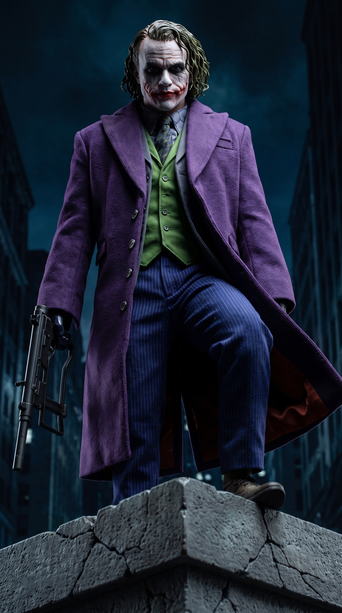
🔍 Clique para ampliar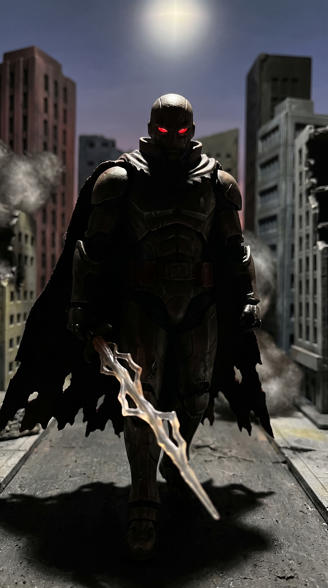
🔍 Clique para ampliar🎥 B) Efeito Parallax (Profundidade Dinâmica)
Coloque pequenos objetos no primeiro plano para gerar profundidade de campo. A OIS do Note 13 Pro é ótima para deslizar o celular suavemente na horizontal.
🪨 Exemplo: Profundidade em Parallax
Elementos em camadas (frente, meio e fundo) gerando sensação 3D cinemática.
🎨 Prompt para IA Cinematic parallax frame, foreground blurred embers, midground sharp hero action figure, background distant blurred explosions, layered cinematic depth, movie screenshot quality --ar 9:16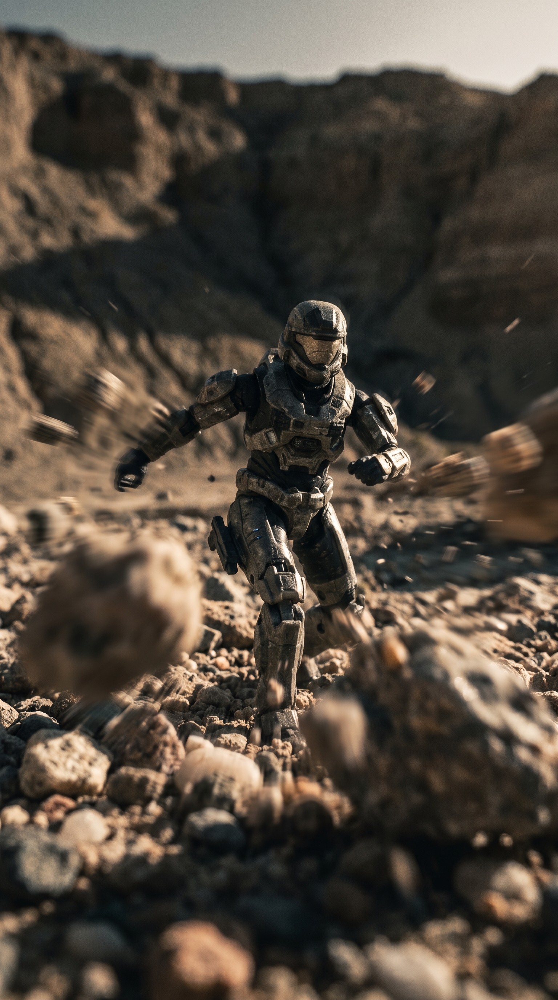
🔍 Clique para ampliar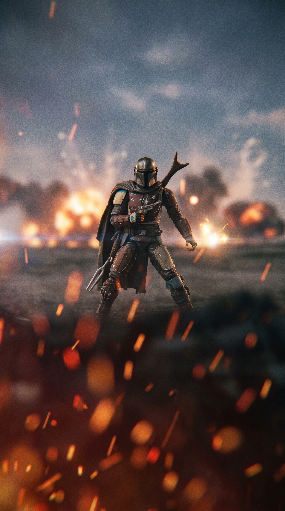
🔍 Clique para ampliar3. Iluminação Cinematográfica
🔦 A) Rim Light (Luz de Contorno) + Luz Principal
A luz traseira cria silhueta clássica de animes e destaca bordas da pintura. O sensor lida bem com a dinâmica se o ISO estiver travado baixo.
✨ Exemplo: Separação de Borda Estilo Anime
Linha brilhante traçando ombros, cabelo e escultura da figura contra fundo escuro.
🎨 Prompt para IA Cinematic photo of action figure, strong rim lighting outline on hair and shoulders, dark moody background, soft fill light on front, dramatic contrast, unreal engine 5 render look --ar 9:16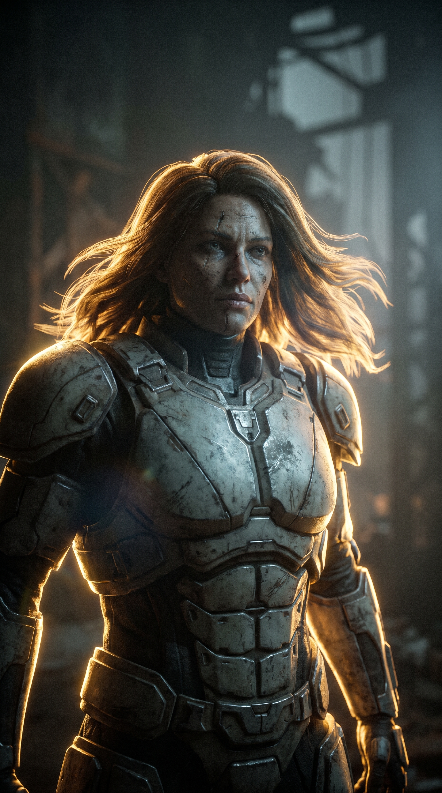
🔍 Clique para ampliar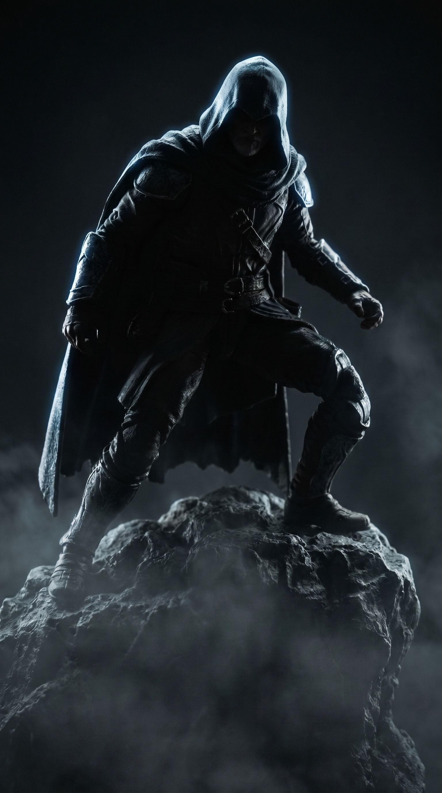
🔍 Clique para ampliar🎨 B) Esquema Neons / Contraste de Cores
Use dois LEDs com cores opostas. O Redmi Note 13 Pro lida incrivelmente bem com saturação dessas luzes se a exposição estiver um pouco reduzida.
🌃 Exemplo: Estilo Cyberpunk / Neon Urban
Reflexos coloridos intensos sobre armadura ou roupas plásticas da figura.
🎨 Prompt para IA Cyberpunk style lighting on action figure, neon blue and magenta rim lights, specular highlights on plastic armor, dark rain background, cinematic night shot --ar 9:16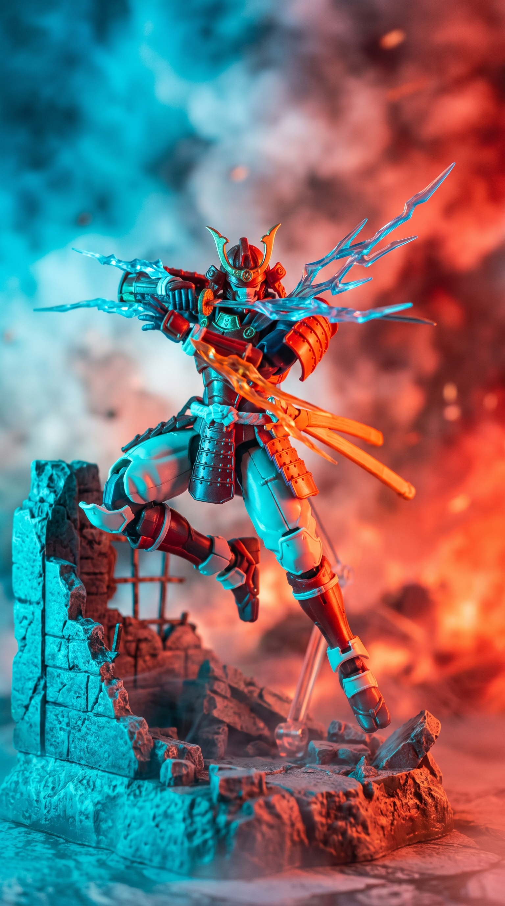
🔍 Clique para ampliar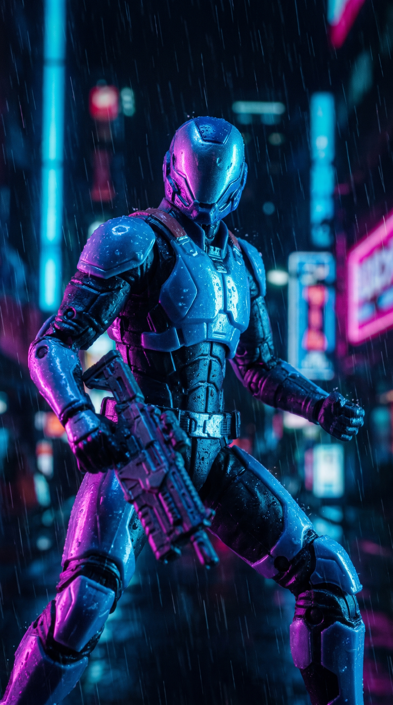
🔍 Clique para ampliar4. Poses & Composição
📐 A) A Linha de Ação Diagonal
Mantenha membros em ângulos cruzados para forçar o sensor a capturar perspectiva e relevo. Evite o "efeito maquete" da figura reta.
(O)
|
/ \
Achata a cena
(O)
\ \
/ \
Dinâmica e cinematográfica
🦸 Exemplo: Aterrissagem de Impacto
Personagem agachado com corpo inclinado na diagonal, pronto para saltar.
🎨 Prompt para IA Dynamic anime pose action figure, superhero landing pose, diagonal line of action, body tilted forward, tension and energy, wide stance, cinematic photography --ar 9:16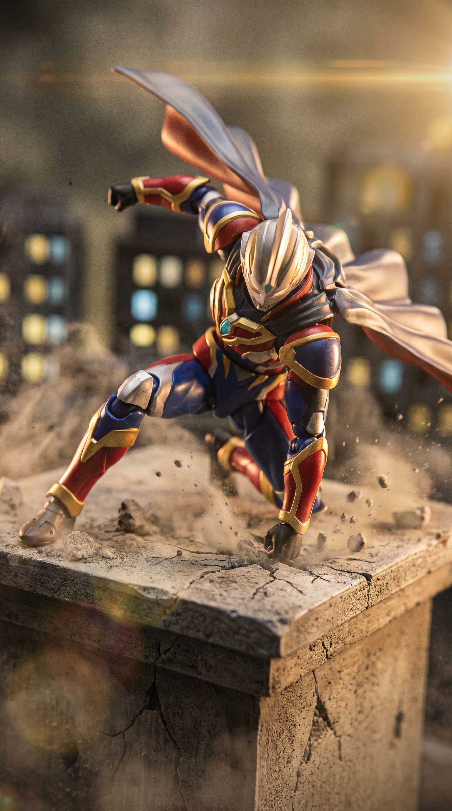
🔍 Clique para ampliar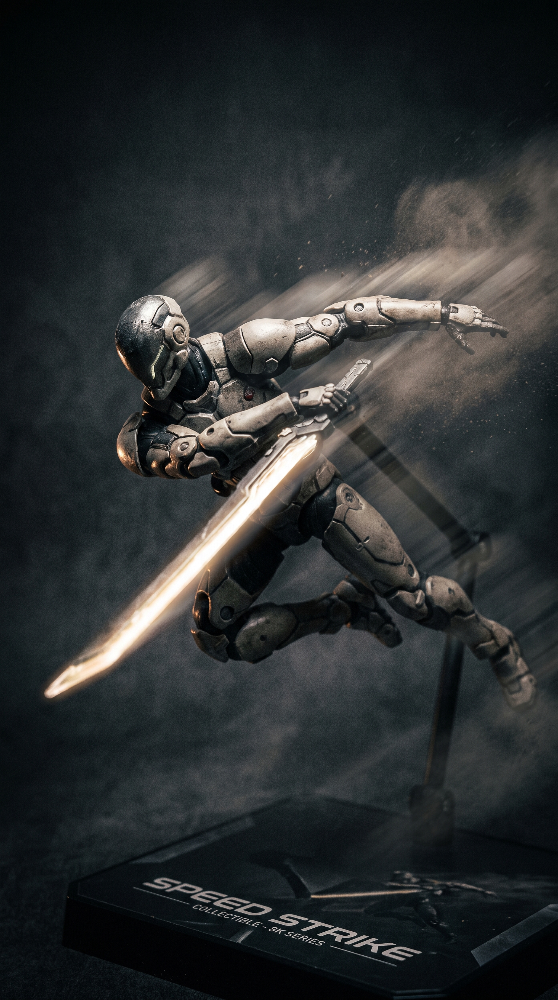
🔍 Clique para ampliar👊 B) Escorço (Foreshortening)
Aponte o punho, espada ou poder do personagem direto para a lente. O algoritmo cria desfoque óptico natural no corpo, focando só no item da frente.
🗡️ Exemplo: Golpe de Espada em Direção à Tela
A ponta da espada gigantesca no primeiro plano com o personagem menor ao fundo.
🎨 Prompt para IA Extreme foreshortening angle, action figure pointing sword directly at the camera, giant sword blade foreground, shallow depth of field, anime manga dynamic perspective --ar 9:16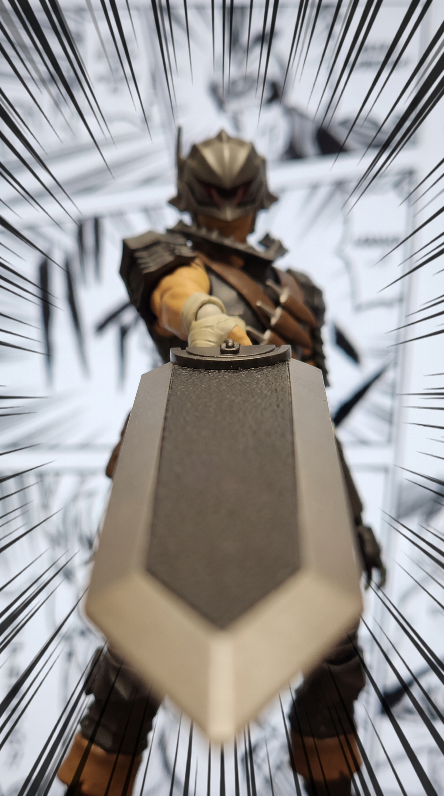
🔍 Clique para ampliar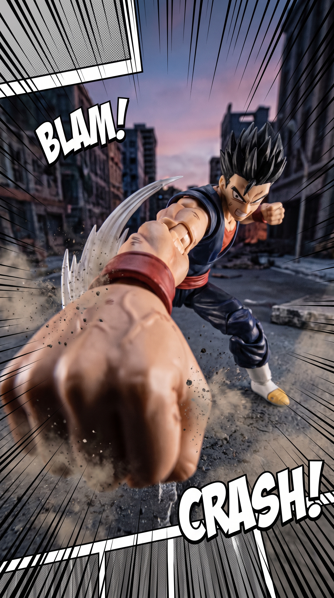
🔍 Clique para ampliar5. Efeitos Práticos (VFX Físicos)
🧪 Partículas Reais no Ar
O sensor do Redmi tem ótima nitidez em áreas iluminadas. Aproveite para criar efeitos reais sem pós-produção.
| Efeito | Como Fazer | Resultado | |
|---|---|---|---|
| 💨 | Fumaça Volumétrica | Vaporizador, incenso ou vape soprado de lado | Feixes de luz dramáticos no vídeo |
| ✨ | Partículas de Poeira | Amido de milho ou canela jogados perto da luz | Pontos brancos reluzentes (efeito faísca) |
| 🌬️ | Vento de Batalha | Secador de cabelo no modo frio apontado na lateral | Movimento fluido em tecidos e cabelos |
Dica de ouro: sempre ilumine a fumaça/poeira com uma luz lateral. Sem iluminação dedicada, as partículas somem no escuro.
6. Edição & Estrutura do Reels
⏱️ Ritmo de Corte (Fluxo para Reels)
Estruture seus vídeos com progressão de impacto. O segredo é variar a velocidade.
👁️ Exemplo 1: Hook Inicial (0.0s – 1.5s)
Close-up extremo nos olhos ou detalhe iluminado do personagem piscando em luzes rápidas.
🎨 Prompt para IA Macro close-up shot of action figure helmet eye glowing, high tension lighting, fast motion blur feel, teaser video thumbnail style --ar 9:16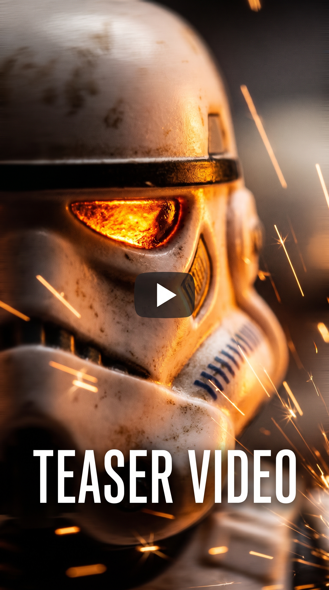
🔍 Clique para ampliar🎬 Exemplo 2: Revelação Épica do Clímax (5.0s – 8.0s)
Cena completa revelada com fumaça, luzes de contorno e enquadramento de pôster de filme.
🎨 Prompt para IA Full body hero shot of action figure standing in smoke, movie poster composition, volumetric light rays, color graded cinematic finish, masterpiece --ar 9:16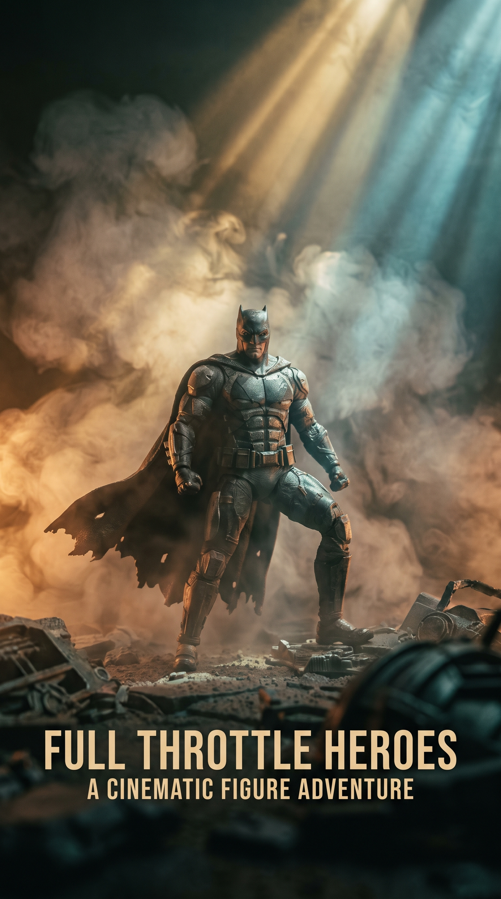
🔍 Clique para ampliar🎨 Color Grading
- Contraste: +10
- Sombras: -15 (esconde o fundo do ambiente)
- Nitidez: +5 (realça texturas da pintura)
⚡ Speed Ramping
Interpole partes rápidas a 2x e diminua abruptamente para 0.3x (Slow Motion) bem na batida da música ou no golpe do personagem. Esse contraste de velocidade é o que viraliza.
Exporte em: 1080p a 60 FPS para o Reels não comprimir demais. Se o projeto tiver slow-motion, 4K a 30 FPS como master também funciona bem no CapCut/Premiere/DaVinci.